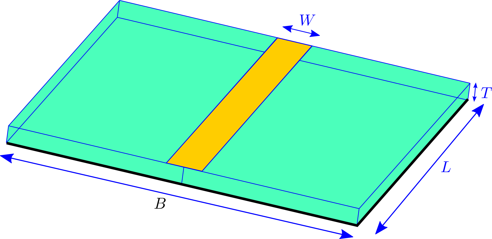
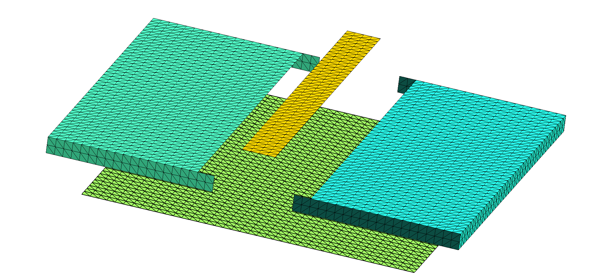
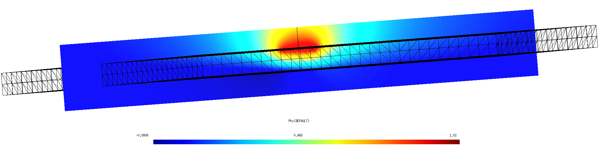

Capacitance of a PCB stripline trace
In this example, we use scuff-static to compute the capacitance of a metal trace on an FR4 printed circuit board (PCB) with ground plane. Here's a schematic depiction:

Here the green region is dielectric, the yellow region is an (infinitesimally thin) metallic trace on the upper surface of the dielectric, and black indicates a ground plane on the bottom surface of the dielectric.
gmsh and scuff-em geometry files
Due to the presence of multi-material junctions (points at which three or more material regions meet, which in the figure above occur along the edges of the metal trace and the ground plane), the geometry cannot be described as a collection of 3D volumes bounded by closed surfaces, and instead requires a more sophisticated geometry description in terms of regions and surfaces. More specifically, there are only two regions in the problem (the exterior vacuum region and the dielectric), but there are three distinct surfaces: (1) the metal trace, (2) the dielectric-air interface, and (3) the ground plane. To define a scuff-em geometry description for this case, we need separate meshes for each of these three surfaces. The following picture shows these three surface meshes, displaced for clarity from their positions in the actual geometry:

Here's a gmsh geometry file
defining the various surfaces we need; note that this file makes
three Physical Surface statements to define surfaces (1), (2),
and (3) above.
This file contains user-specifiable parameters
W, L, T, and B corresponding to the geometric quantities
labeled in the figure above, as well as a user-specifiable parameter N
setting the number of triangles per unit length. I generate surface
meshes at two different resolutions like this:
% gmsh -2 -setnumber N 2 StriplineCapacitor.geo
% gmsh -2 -setnumber N 4 StriplineCapacitor.geo
These produce .msh files containing respectively 1948 and 7856
inner triangle edges (you can get this information by running
scuff-analyze --mesh StriplineCapacitor.msh), so I rename them
to StriplineCapacitor_1948.msh and
StriplineCapacitor_7856.msh.
Next I write a scuff-em geometry file
for each meshing resolution. This file defines the two regions and
the three surfaces defined above, specifying that the meshes for
each surface
are to be read from the .msh file with the appropriate Physical Surface
tag.
For the coarser-resolution mesh the file is called
StriplineCapacitor_1948.scuffgeo,
and it looks like this:
REGION Exterior MATERIAL Vacuum
REGION Dielectric MATERIAL CONST_EPS_4
OBJECT Trace
MESHFILE StriplineCapacitor_1948.msh
MESHTAG 1
ENDOBJECT
SURFACE RightBoundary
MESHFILE StriplineCapacitor_1948.msh
MESHTAG 2
REGIONS Exterior Dielectric
ENDSURFACE
SURFACE LeftBoundary
MESHFILE StriplineCapacitor_1948.msh
MESHTAG 2
ROTATED 180 ABOUT 0 0 1
REGIONS Exterior Dielectric
ENDSURFACE
OBJECT GroundPlane
MESHFILE StriplineCapacitor_1948.msh
MESHTAG 3
ENDOBJECT
Some notes on this geometry description:
-
Since the default material for an
OBJECTorSURFACEis PEC (Perfectly Electrically Conducting), I don't need to include aMaterialspecification for the trace or the ground plane. -
I have broken up surface 2 (dielectric--vacuum interface) into two halves, described by identical surface meshes with one rotated 180 degrees around the z axis. This is not necessary, but it saves a little time in the matrix assembly, as the diagonal matrix blocks corresponding to the two half-surfaces are identical and thus only need to be computed once.
-
This geometry specification is perfectly adequate for electrostatic problems, but would be not quite right for finite-frequency problems. For such problems I would instead want to define the trace and ground plane as regions of (in this case, infinite) surface conductivity on a closed dielectric boundary surface.
-
Having written this
.scuffgeofile for the coarser of my two surface meshes, I can obtain one for the finer mesh by going like this:
BASE=StriplineCapacitor
sed 's/1948/7856/g' ${BASE}_1948.scuffgeo > ${BASE}_7856.scuffgeo
Calculation of capacitance matrix
To compute the capacitance matrices for the two mesh resolutions, go like this from the shell command line:
for N in 1948 7856
do
GEOM=StriplineCapacitor_${N}
scuff-static --geometry ${GEOM}.scuffgeo --CapFile ${GEOM}.CapMatrix
done
This produces files
StripLineCapacitor_1948.CapMatrix
and
StripLineCapacitor_7856.CapMatrix
reporting capacitance-matrix entries.
These files look something like this:
# scuff-static run on hikari (02/18/17::18:46:43)# indices of conducting surfaces: # data file columns:
# 0 Trace
# 1 GroundPlane
# 01: C_{0,0}
# 02: C_{0,1}
# 03: C_{1,1}
3.644861e+01 -3.080723e+01 1.142077e+02
The three numbers reported here are the capacitance-matrix entries , , divided by The capacitance from trace to ground plane is
Field visualization
Here's a cross-sectional plot of electrostatic potential with the trace and ground plane maintained at potentials of 1 and 0 volt respectively:

This plot is generated as follows:
ARGS=""
ARGS="${ARGS} --geometry StriplineCapacitor_7876.scuffgeo"
ARGS="${ARGS} --PotFile MyPotentialFile"
ARGS="${ARGS} --FVMesh FVMesh.msh"
scuff-static ${ARGS}
Here MyPotentialFile is a text file
specifying the conductor potentials and FVMesh.msh is a
field-visualization screen mesh produced by gmsh from
the file FVMesh.geo.
Capacitance vs. PCB thickness
Here's a bash script that computes capacitance vs. PCB thickness:
For each thickness value T in the file TFile,
this script
-
runs gmsh to create a new surface mesh for a PCB stripline with thickness
T -
runs scuff-static to compute the capacitance matrix for this thickness
-
extracts the data from the
.CapMatrixfile output and writes it together withTto an overall output file.
According to this memo, the capacitance per unit length (CPUL) of a stripline trace with the geometry shown above is
where is the relative dielectric constant and for an infinitesimally thin trace. (The factor 1/25.4 converts units from pf/inch to pf/mm).